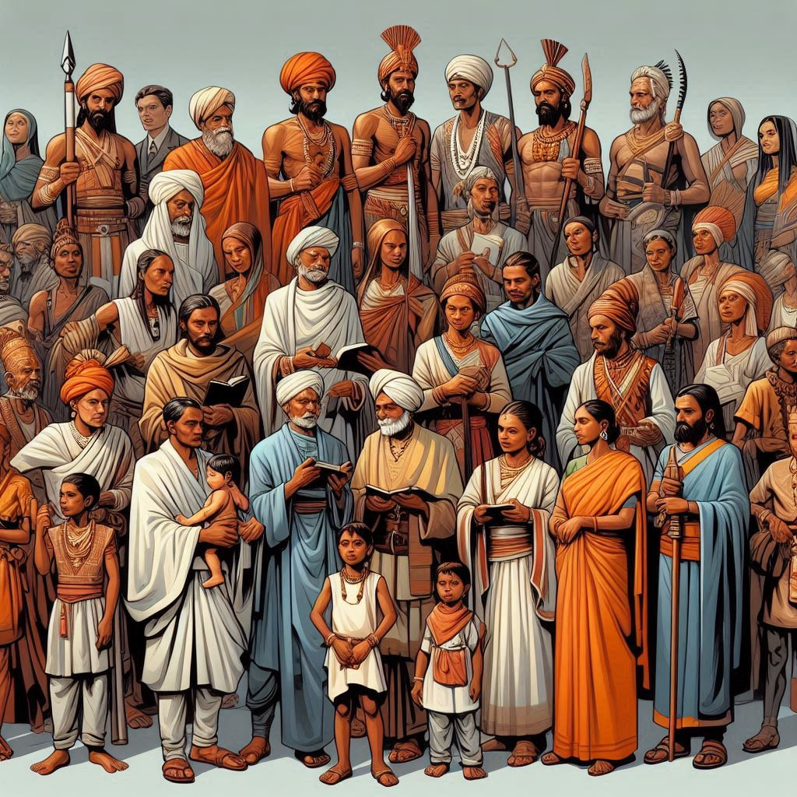
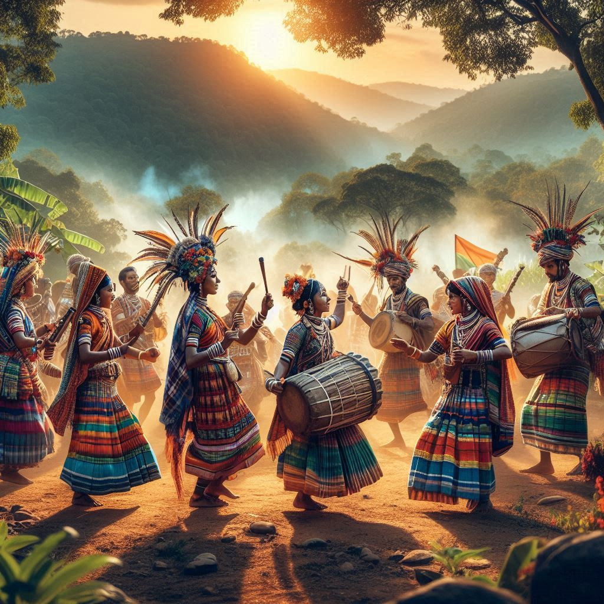

The history of Chhattisgarh is rich and diverse, shaped by its tribal heritage, cultural developments,
and political changes. Here’s an overview of its historical timeline:
1. Ancient History
- Early Inhabitants: The region that is now Chhattisgarh has been inhabited since
prehistoric times, as evidenced by archaeological findings such as cave paintings in Kanger
Valley. The early inhabitants were primarily tribal communities who lived in harmony
with nature.
- Mauryan Empire: During the 3rd century BCE, Chhattisgarh was part of the Mauryan
Empire. The Mauryan Emperor Ashoka is known to have spread Buddhism throughout
the region, contributing to the cultural and religious landscape.
2. Medieval Period
- Shivnath and Durgavati Kingdoms: After the decline of the Mauryan Empire, the region saw
the rise of local kingdoms. The Shivnath Kingdom and the Durgavati Kingdom
emerged, which were significant during the medieval period.
- Kalachuri Dynasty: The Kalachuri dynasty (10th-12th century CE) played a crucial
role in the history of Chhattisgarh. They established their capital at Khilji and
promoted art, architecture, and culture in the region.
3. British Rule
- Colonial Era: During the 18th century, Chhattisgarh came under the control of the British
East India Company. The region was part of the larger Central Provinces during British
rule.
- Rebellion of 1857: The First War of Independence in 1857 saw significant
participation from the people of Chhattisgarh. The revolt was marked by uprisings against
British authority, reflecting local discontent.


4. Post-Independence Era
- Formation of the State: After India gained independence in 1947, Chhattisgarh was
initially part of the state of Madhya Pradesh. Due to distinct cultural and linguistic
identities, demands for a separate state began to gain momentum in the late 20th century.
- Creation of Chhattisgarh: On November 1, 2000, Chhattisgarh was officially formed
as the 26th state of India, becoming a separate entity from Madhya Pradesh. This marked a
significant milestone in the region's history, allowing for better governance and development
initiatives.
5. Modern Developments
- Economic Growth: In recent years, Chhattisgarh has experienced economic growth, primarily
due to its rich mineral resources and industrial development. The state is one of the leading
producers of coal, iron ore, and other minerals in India.
- Cultural Revival: There has been a revival of interest in Chhattisgarh's rich cultural
heritage, including traditional music, dance, and crafts. Various festivals and cultural events
celebrate the state's diverse tribal and non-tribal communities.
6. Socio-Political Context
- Naxalite Movement: In the late 20th and early 21st centuries, Chhattisgarh faced
challenges related to the Naxalite movement, with various tribal areas experiencing unrest due
to issues such as land rights, displacement, and lack of development.
- Government Initiatives: The state government has implemented several initiatives aimed at
addressing these issues, promoting education, healthcare, and infrastructure development to
improve the quality of life for its citizens.
Conclusion
The history of Chhattisgarh is a tapestry woven with the threads of ancient civilizations, tribal
cultures, and political transformations. From its prehistoric roots to its modern developments, the
state has continually evolved, reflecting the resilience and diversity of its people. Today,
Chhattisgarh stands as a significant cultural and economic hub in India, with a rich heritage that
continues to shape its identity.